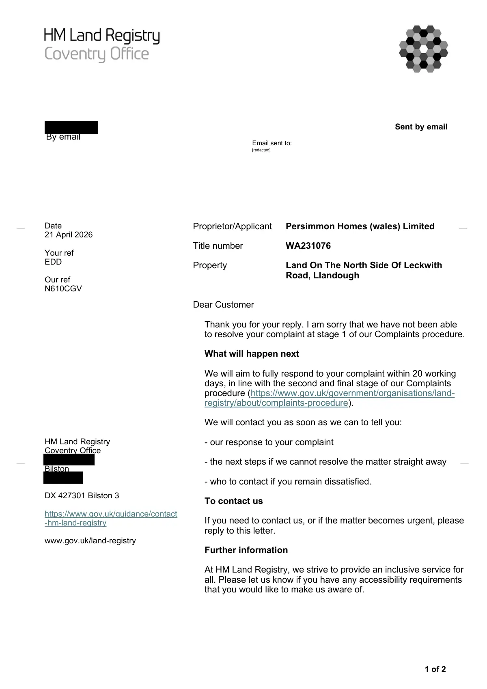

GHF-E106-R94-A1 correspondence (no disclosure)
Stage two acknowledgement

Transcript
1 of 2 Sent by email Date 21 April 2026 Your ref EDD Our ref N610CGV HM Land Registry Coventry Office [address redacted] Bilston [address redacted] DX 427301 Bilston 3 https://www.gov.uk/guidance/contact -hm-land-registry www.gov.uk/land-registry Proprietor/Applicant Persimmon Homes (wales) Limited Title number WA231076 Property Land On The North Side Of Leckwith Road, Llandough Dear Customer Thank you for your reply. I am sorry that we have not been able to resolve your complaint at stage 1 of our Complaints procedure. What will happen next We will aim to fully respond to your complaint within 20 working days, in line with the second and final stage of our Complaints procedure (https://www.gov.uk/government/organisations/land- registry/about/complaints-procedure). We will contact you as soon as we can to tell you: - our response to your complaint - the next steps if we cannot resolve the matter straight away - who to contact if you remain dissatisfied. To contact us If you need to contact us, or if the matter becomes urgent, please reply to this letter. Further information
Read more
At HM Land Registry, we strive to provide an inclusive service for all. Please let us know if you have any accessibility requirements that you would like to make us aware of. Requester By email Email sent to: __ __ __ __ [redacted] 2 of 2 If you would like to discuss this correspondence or require it in an alternative format please contact us, quoting our reference. Yours faithfully, Karen Hainey Lawyer Support Officer
Artifact description
Automated notification forwarding another official PDF letter concerning the title.
| Catalogue ID | GHF-E106-R94-A1 |
|---|---|
| What it is | PDF document from HM Land Registry. Attached to an email received on 21 April 2026, their reference WA231076/A/216/KH. 2 pages. |
| From | HM Land Registry |
| Email received | 21 April 2026 |
| Their reference | WA231076/A/216/KH |
| Pages | 2 |
| File | Correspondence.pdf (138 KB) |
| State | Read |
Our integration
Part of the records enquiry thread with HM Land Registry opened 21 April 2026. The thread's standing classification is “correspondence (no disclosure)”. Statutory time: no statutory deadline.
Concern to test: whether this reply answers the question as asked, or a narrower one. Not checked against the original request wording here.
What cuts against the case: the body disclosed material, which is the opposite of a refusal; what it disclosed is shown here as sent.
Related: GHF-E106-R27-A1 — N610CGV letter (WA231076) · The covering email · What They Don’t Say: WTDS-0f43bfca-1 · EV-0353 in the evidence catalogue · Timeline · Disclosure Dartboard